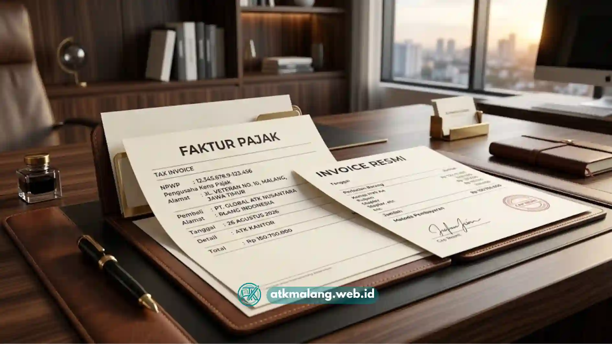

Instansi pemerintah, sekolah negeri maupun swasta, serta korporasi menengah di Malang Raya menghadapi tantangan yang berbeda dari sekadar mencari harga murah saat berbelanja Alat Tulis Kantor.
Kebutuhan utama justru terletak pada kepastian legalitas transaksi, badan usaha resmi, faktur pajak yang sah, serta dokumen penawaran yang sesuai standar audit internal.
Tanpa kelengkapan dokumen tersebut, proses pengadaan atk kantor malang berisiko menimbulkan masalah administratif saat pemeriksaan keuangan tahunan.
Daftar Isi
Pentingnya Legalitas dalam Pengadaan ATK Kantor Malang
Prosedur pengadaan atk kantor malang yang aman wajib melibatkan verifikasi terhadap keabsahan badan hukum penyedia, kelengkapan NPWP dan SIUP.
Serta kemampuan menerbitkan faktur pajak resmi, dan jaminan penyediaan invoice yang akurat untuk pelaporan keuangan perusahaan maupun instansi.
ATK Malang (atkmalang.web.id) merupakan partner pengadaan berlegalitas lengkap siap menyuplai instansi B2B di Malang Raya, mencakup Kota Malang, Kabupaten Malang, dan Kota Batu.
Sehingga transaksi Alat Tulis Kantor Anda dilengkapi dengan dokumen transaksi yang siap diaudit kapan pun.
Mengenal Kewajiban Pajak dalam Transaksi ATK Korporat
Dari sudut pandang perpajakan korporasi, transaksi pengadaan barang seperti Alat Tulis Kantor antara badan usaha membawa konsekuensi kewajiban pajak.
Konsekuensi ini perlu dipahami oleh bendahara pengadaan maupun bagian keuangan instansi agar tidak terjadi kesalahan pelaporan atau denda administratif.
Pengenaan PPN atas Transaksi ATK
Setiap transaksi pembelian Alat Tulis Kantor dari distributor atk terpercaya yang berstatus Pengusaha Kena Pajak (PKP) dikenai Pajak Pertambahan Nilai sesuai tarif yang berlaku.
Faktur pajak yang diterbitkan atas transaksi tersebut menjadi dokumen wajib bagi instansi untuk keperluan pelaporan SPT Masa PPN.
Dokumen ini sekaligus bukti sah bahwa transaksi telah dilakukan dengan supplier atk resmi dan bertanggung jawab penuh.

Penerbitan faktur pajak resmi adalah syarat wajib pengadaan Alat Tulis Kantor B2B.PPh Pasal 22 dan Kewajiban Pemungutan
Instansi pemerintah maupun badan usaha tertentu yang ditetapkan sebagai pemungut pajak memiliki kewajiban memotong PPh Pasal 22 atas pembelian barang, termasuk Alat Tulis Kantor, dari rekanan.
Kesiapan supplier dalam melengkapi bukti potong dan menyesuaikan skema pembayaran dengan ketentuan ini menjadi indikator penting.
Kesiapan ini menunjukkan kredibilitas sebuah distributor atk terpercaya bagi instansi yang tunduk pada regulasi ketat tata kelola anggaran negara.
Pentingnya Tanda Terima dan Bukti Serah Terima Resmi
Selain faktur pajak dan invoice, tanda terima barang yang ditandatangani kedua belah pihak menjadi dokumen pelengkap yang memperkuat validitas transaksi Alat Tulis Kantor saat proses audit internal maupun eksternal berlangsung.
Dokumen ini mencatat kesesuaian jumlah, spesifikasi, serta kondisi barang pada saat serah terima di lokasi klien.
Sehingga meminimalkan potensi sengketa administratif di kemudian hari terkait selisih stok penerimaan Alat Tulis Kantor.
Langkah Administratif Pengajuan MoU atau Kontrak Pengadaan
Bagi instansi yang membutuhkan kerja sama jangka panjang dalam menyuplai Alat Tulis Kantor, penyusunan Memorandum of Understanding (MoU) atau kontrak pengadaan berkala menjadi opsi yang lebih efisien dibanding transaksi per pesanan.
Prosesnya umumnya diawali dengan pengajuan surat permintaan penawaran resmi dari instansi, dilanjutkan negosiasi harga dan skema pembayaran bersama penyedia Alat Tulis Kantor.
Kemudian finalisasi dokumen kontrak yang mencantumkan durasi kerja sama, mekanisme pemesanan berkala, serta ketentuan force majeure.
Kontrak yang jelas memudahkan legalitas cv pt malang kedua belah pihak dalam menjalankan kewajiban masing-masing tanpa ambiguitas sedikitpun.
Alur Prosedur Pengadaan ATK Resmi
Berikut gambaran tiga tahap utama dalam alur pengadaan atk kantor malang berlegalitas lengkap.
Setiap tahap disertai dokumen dan penanggung jawab yang wajib dipenuhi dalam menyuplai Alat Tulis Kantor untuk skala korporasi.
| Tahap Prosedur | Dokumen yang Dibutuhkan | Estimasi Waktu Penyelesaian | Penanggung Jawab |
|---|---|---|---|
| Permintaan Penawaran | Surat permintaan penawaran, spesifikasi kebutuhan ATK | 1-2 hari kerja | Purchasing staff / bendahara pengadaan instansi |
| Persetujuan & Verifikasi | Quotation resmi, NPWP & SIUP supplier, draf MoU/kontrak | 2-3 hari kerja | Bagian keuangan instansi & tim legal ATK Malang |
| Pengiriman & Pembayaran | Surat jalan, faktur pajak, invoice, tanda terima barang | 1-5 hari kerja sesuai volume | Tim logistik ATK Malang & bendahara instansi |
Setiap tahap dirancang agar seluruh jejak dokumen transaksi Alat Tulis Kantor tersimpan rapi dan siap dipresentasikan saat proses audit internal maupun eksternal.
Ini sekaligus meminimalkan potensi keterlambatan administratif bagi divisi pengadaan.
Kesiapan Dokumen sebagai Indikator Supplier Terpercaya
Instansi yang mencari distributor atk terpercaya sebaiknya tidak hanya membandingkan harga Alat Tulis Kantor, tetapi juga menilai kecepatan supplier dalam menyediakan dokumen legal seperti NPWP, SIUP, dan sampel faktur pajak sebelum transaksi berlangsung.
Kesiapan dokumen yang lambat sering kali menjadi indikator awal risiko administratif di kemudian hari.
Terutama bagi instansi pemerintah dan sekolah yang tunduk pada mekanisme pertanggungjawaban anggaran yang sangat ketat.
Layanan pengadaan ATK kantor dari ATK Malang dirancang untuk memenuhi kebutuhan tersebut secara menyeluruh, mulai dari penerbitan quotation resmi hingga faktur pajak yang lengkap.
Profil legalitas serta rekam jejak kerja sama dalam menyuplai Alat Tulis Kantor dengan berbagai instansi dapat dipelajari lebih lanjut pada halaman tentang kami.
Legalitas sebagai Fondasi Kepercayaan B2B
Proses pengadaan atk kantor malang yang berlegalitas lengkap bukan sekadar formalitas administratif belaka.
Melainkan fondasi kepercayaan jangka panjang antara instansi dan penyedia barang Alat Tulis Kantor.
Kelengkapan NPWP, faktur pajak, serta dokumen kontrak yang rapi memberikan perlindungan bagi kedua belah pihak sekaligus mempermudah proses audit tahunan.